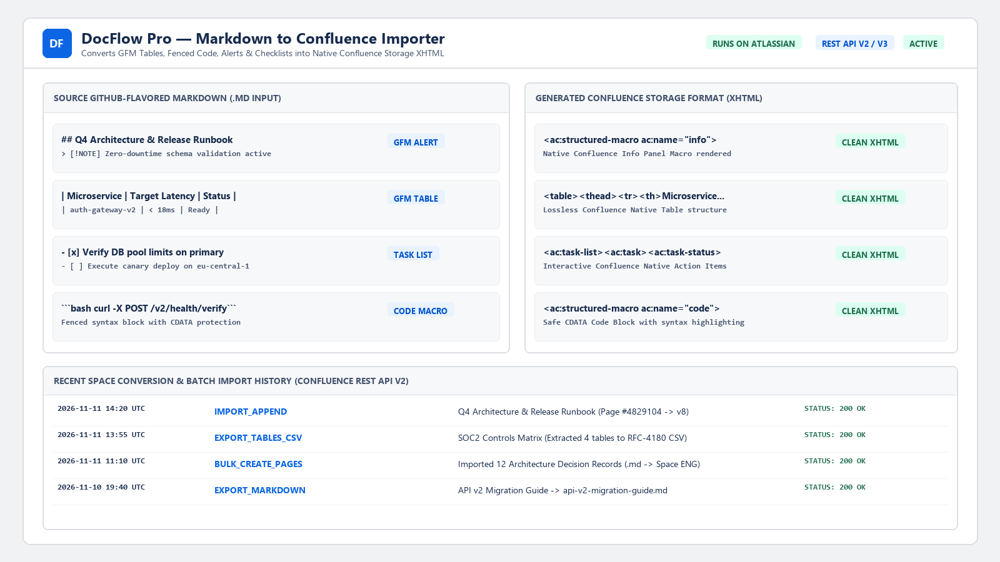
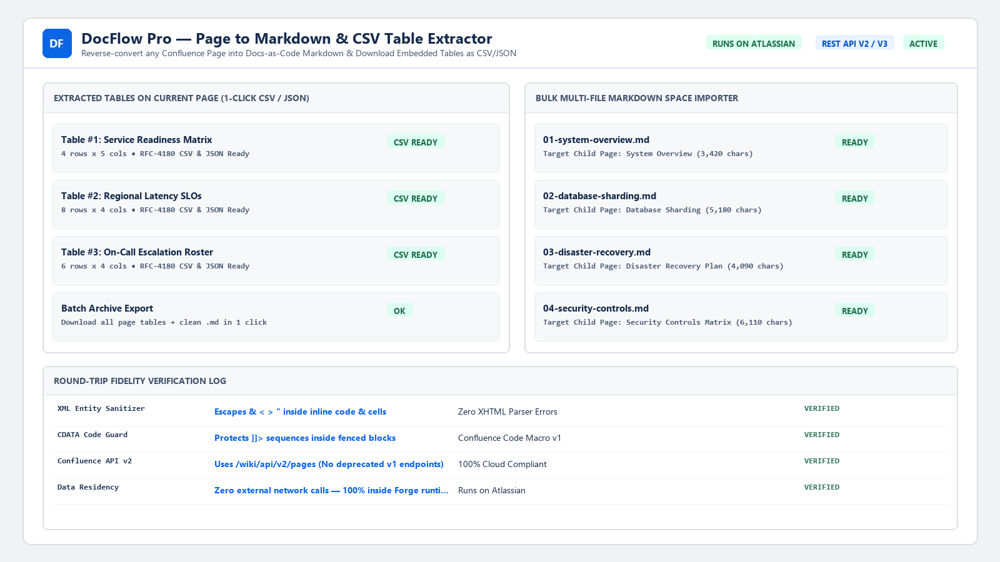
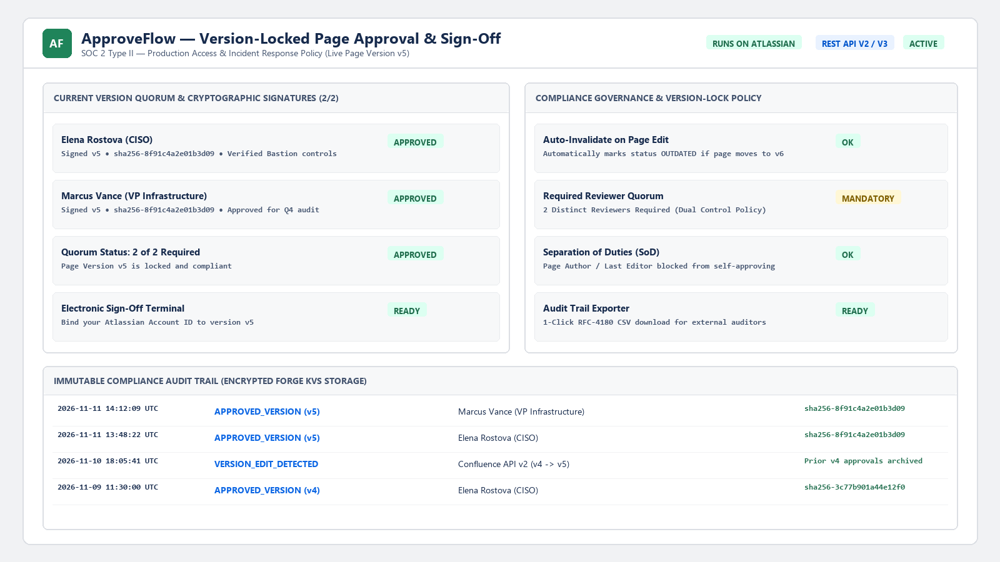
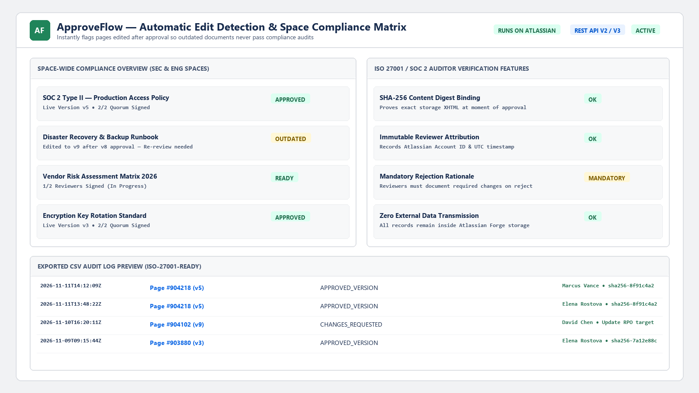
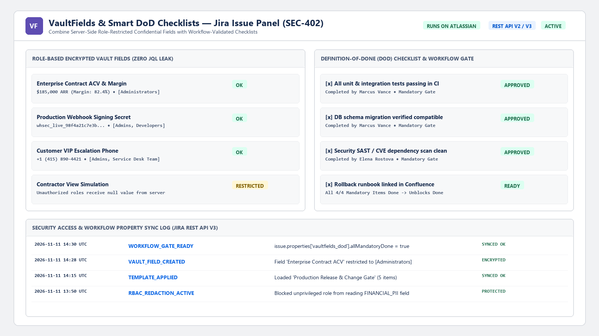
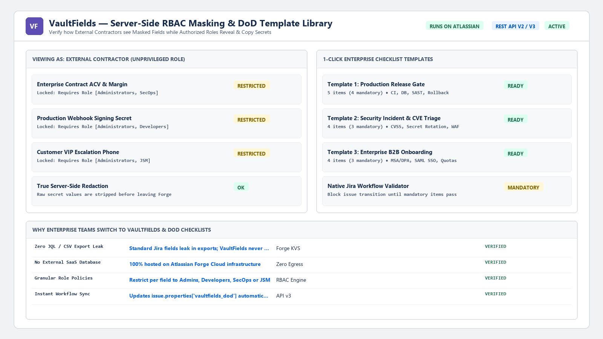

Welcome! This portal provides complete public documentation, installation & user flow instructions, permission scope justifications, and HD walkthrough demo videos for our 3 serverless Atlassian Forge applications.
Forge App ID: 0291aa4f-ac0d-4ecb-a1e3-cd56e528930e | Host Product: Atlassian Confluence Cloud
•••) menu in the top-right corner of the page and select DocFlow Pro — Markdown & Table Hub (confluence:contentAction)..md) or extract all tables on the page into downloadable .CSV or .JSON files..md files to automatically create child pages under the current Confluence page via Confluence REST API v2.| Scope | Justification |
|---|---|
read:page:confluence | Reads current Confluence page storage XHTML to export Markdown and extract HTML tables to CSV/JSON. |
write:page:confluence | Updates the current page body when importing Markdown and creates child pages during batch import via Confluence REST API v2. |
storage:app | Stores recent import/export history logs inside encrypted Atlassian Forge Storage. |
✓ Zero External Egress: No data ever leaves Atlassian Cloud.


Forge App ID: b7c40a69-4bd4-49d0-9646-f8e11bcd0d2b | Host Product: Atlassian Confluence Cloud
confluence:contentBylineItem).OUTDATED until re-approved.| Scope | Justification |
|---|---|
read:page:confluence | Reads the current page version number, author Account ID, and body content via Confluence REST API v2 to compute the SHA-256 integrity digest. |
write:page:confluence | Updates dynamic content byline status properties so the approval state is visible on the page. |
storage:app | Stores immutable approval sign-offs, quorum policies, and SOC 2 / ISO 27001 audit trail records inside encrypted Forge Storage. |
✓ Zero External Egress: 100% hosted on Atlassian Forge.


Forge App ID: f9f578f7-7cad-4fbb-8b73-05581241adfa | Host Product: Atlassian Jira Cloud
jira:issuePanel).Administrators, Security Officers, Developers, or Service Desk Team). Unauthorized users receive server-redacted masks and cannot leak values via JQL/CSV.issue.properties['vaultfields_dod'] (allMandatoryDone: true/false) via Jira REST API v3 to support workflow transition validators.| Scope | Justification |
|---|---|
read:jira-work | Reads current Jira issue metadata and project roles to enforce server-side RBAC access checks. |
write:jira-work | Writes checklist completion status to native Jira Issue Property vaultfields_dod for Jira Workflow Validators. |
read:jira-user | Identifies current user's Atlassian Account ID and role membership for RBAC filtering and audit logs. |
storage:app | Stores encrypted VaultFields values, checklist items, and security audit logs inside Forge Storage. |
✓ Zero External Egress: 100% hosted on Atlassian Forge.


@forge/api) and native Jira/Confluence entity properties, inheriting your organization's Atlassian Cloud data residency and encryption-at-rest policies.accountId and display name) provided by the Forge runtime to attribute approvals, checklist sign-offs, and audit events.mikrozar@gmail.com